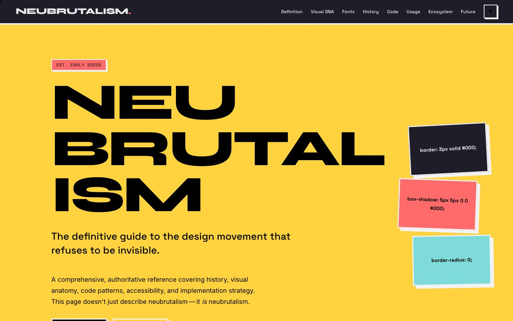

References / Website / 59
Neubrutalism guide website
A guide to the style that is built in the style, with its own CSS rules shown as outlined sticky notes.
- Source
- neubrutalism.com
- Style
- Neo-brutalism (agent-proposed, not yet reviewed by a person)
- Moods
- Loud, didactic, raw
- Evidence
- Captured with
tools/capture.mjs(headless Chrome, 1440 × 900) on 25 September 2026 and inspected. The screenshot shows the first viewport; the measurement covers up to four screens. - Reviewed
- Rights
- Third-party work, stored with credit for commentary. License: unverified. Rights policy
Observed
- The hero is flat yellow with the word NEUBRUTALISM split over three lines in very large, very heavy extended type.
- Three tilted notes in black, coral, and teal show the CSS declarations border: 3px solid #000, box-shadow: 5px 5px 0 #000, and border-radius: 0.
- A small coral label with an outline reads “EST. EARLY 2020s”.
- The navigation bar is black with white text and a square outlined menu button.
Why it belongs
The page states its own tokens as content, which makes it a direct source for the style’s values: 3 px black borders, a 5 px unblurred shadow, and no radius.
Borrow
Use the three declarations it shows as a starting point: 3 px solid black border, 5 px 5 px 0 black shadow, zero radius.
Measured
Machine-extracted by tools/extract-traits.js on . Full measurement.
- Type families
- Inter (68%), Space Grotesk (15%), Space Mono (14%)
- Type scale ratio
- 1.17
- Median radius
- 0 px
- Mean chroma
- 0.56
- Palette
- #ffd23f 73%
- #ececed 14%
- #1f1e28 9%
- #000000 1%
- #7fdbda 1%
- #a6a6b0 1%
- #ff6b6b 1%
- #ffffff 0%

